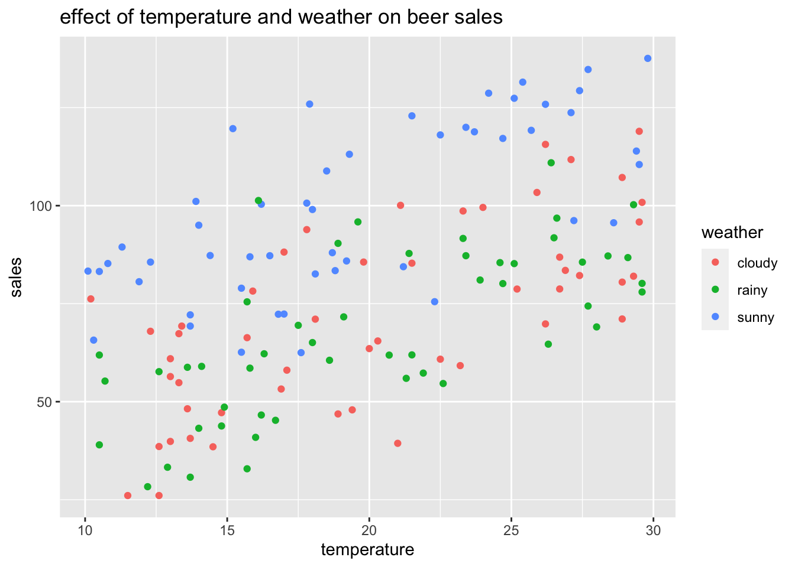
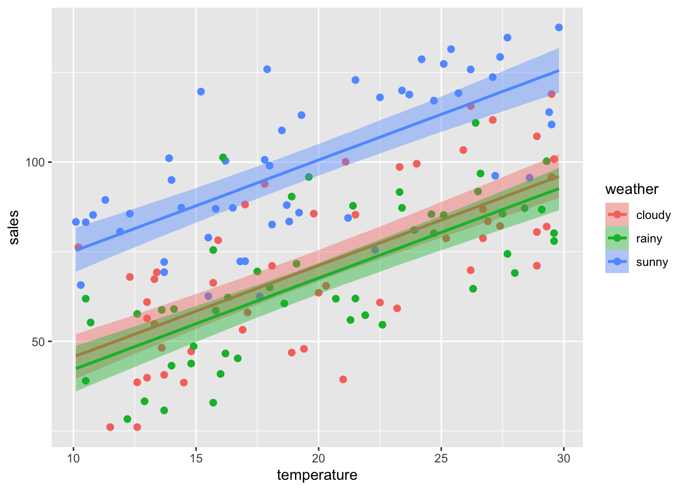
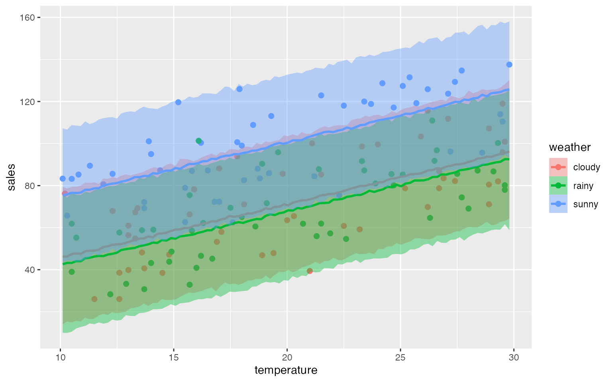
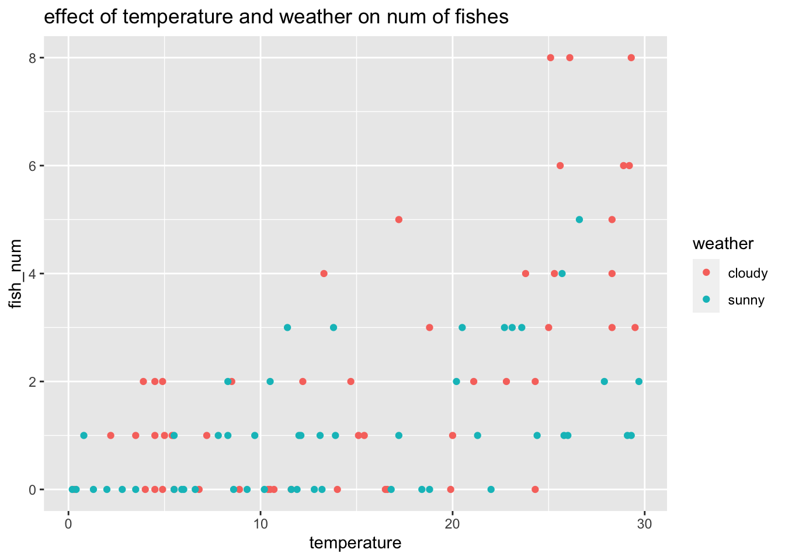
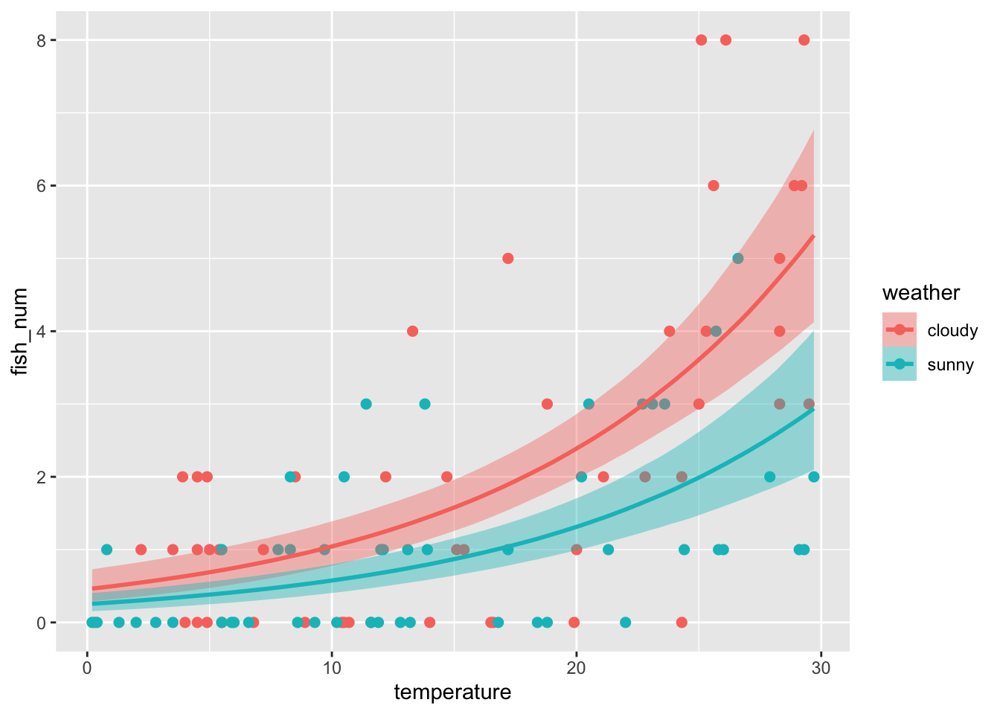
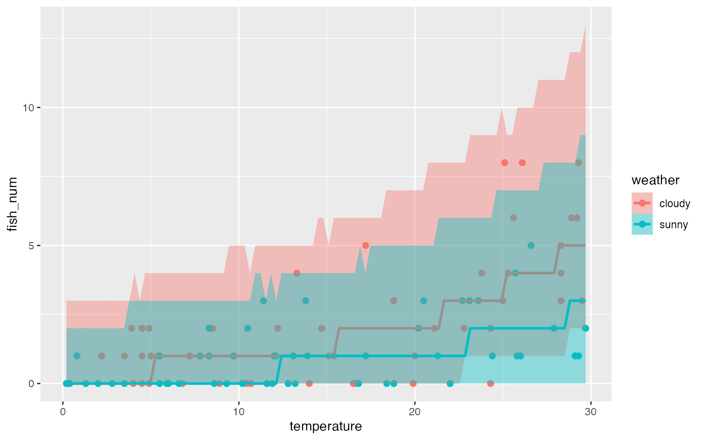
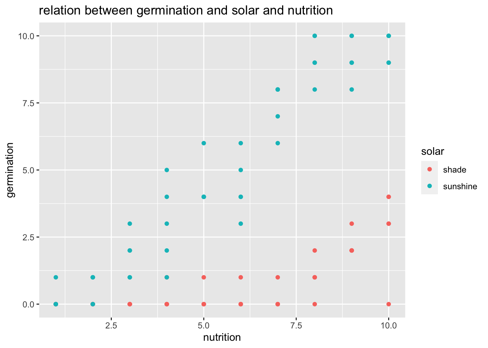
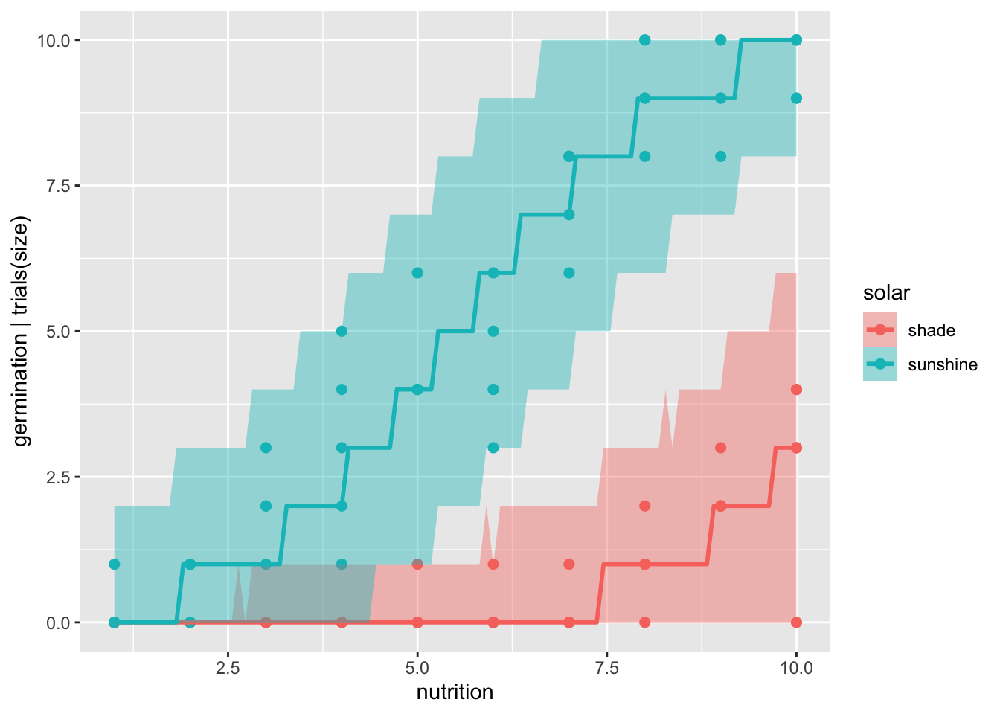
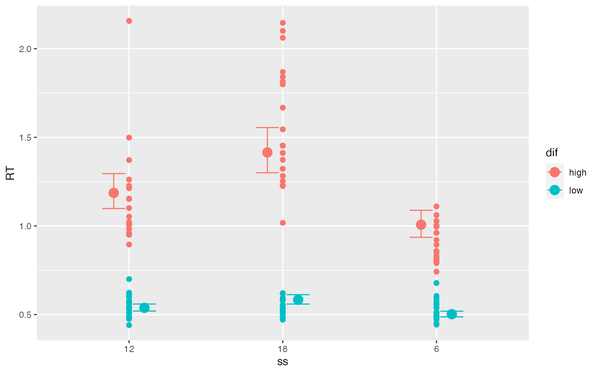

3-7: 正規線形モデル
2. モデルの構造
- 正規線形モデル：リンク関数が恒等関数であるモデルの総称
- ここで使うモデル
- \(売り上げの平均値=晴れ＋雨＋気温\)
- \(\mu_i=\beta_0+\beta_1x_{i1}+\beta_2x_{i2}+\beta_3x_{i3}\)
- \(y_i\sim Normal(\mu_i, \sigma^2)\)
3. 分析の準備
- いつもの
library(rstan)## 要求されたパッケージ StanHeaders をロード中です## 要求されたパッケージ ggplot2 をロード中です## rstan (Version 2.21.3, GitRev: 2e1f913d3ca3)## For execution on a local, multicore CPU with excess RAM we recommend calling
## options(mc.cores = parallel::detectCores()).
## To avoid recompilation of unchanged Stan programs, we recommend calling
## rstan_options(auto_write = TRUE)library(brms)## 要求されたパッケージ Rcpp をロード中です## Loading 'brms' package (version 2.16.3). Useful instructions
## can be found by typing help('brms'). A more detailed introduction
## to the package is available through vignette('brms_overview').##
## 次のパッケージを付け加えます: 'brms'## 以下のオブジェクトは 'package:rstan' からマスクされています:
##
## loo## 以下のオブジェクトは 'package:stats' からマスクされています:
##
## arrstan_options(auto_write=TRUE)
options(mc.cores=parallel::detectCores())4. データの読み込み
- 天気と気温が売り上げの平均値に影響するというモデルのためのデータ
data37<-read.csv('3-7-1-beer-sales-4.csv')
summary(data37)## sales weather temperature
## Min. : 26.06 Length:150 Min. :10.10
## 1st Qu.: 61.19 Class :character 1st Qu.:14.82
## Median : 80.55 Mode :character Median :19.00
## Mean : 79.58 Mean :19.91
## 3rd Qu.: 96.11 3rd Qu.:25.35
## Max. :137.57 Max. :29.80ggplot(data=data37,
mapping=aes(x=temperature, y=sales))+
geom_point(aes(color=weather))+labs(title="effect of temperature and weather on beer sales")
5. brmsによる正規線形モデルの推定
brms37<-brm(
formula = sales ~ weather + temperature,
family = gaussian(),
data = data37,
seed = 1,
prior = c(set_prior("", class="Intercept"),
set_prior("", class="sigma"))
)## Compiling Stan program...## Trying to compile a simple C file## Running /usr/local/Cellar/r/4.1.2/lib/R/bin/R CMD SHLIB foo.c
## clang -I"/usr/local/Cellar/r/4.1.2/lib/R/include" -DNDEBUG -I"/usr/local/lib/R/4.1/site-library/Rcpp/include/" -I"/usr/local/lib/R/4.1/site-library/RcppEigen/include/" -I"/usr/local/lib/R/4.1/site-library/RcppEigen/include/unsupported" -I"/usr/local/lib/R/4.1/site-library/BH/include" -I"/Users/imaru/Library/R/x86_64/4.1/library/StanHeaders/include/src/" -I"/Users/imaru/Library/R/x86_64/4.1/library/StanHeaders/include/" -I"/usr/local/lib/R/4.1/site-library/RcppParallel/include/" -I"/Users/imaru/Library/R/x86_64/4.1/library/rstan/include" -DEIGEN_NO_DEBUG -DBOOST_DISABLE_ASSERTS -DBOOST_PENDING_INTEGER_LOG2_HPP -DSTAN_THREADS -DBOOST_NO_AUTO_PTR -include '/Users/imaru/Library/R/x86_64/4.1/library/StanHeaders/include/stan/math/prim/mat/fun/Eigen.hpp' -D_REENTRANT -DRCPP_PARALLEL_USE_TBB=1 -I/usr/local/opt/gettext/include -I/usr/local/opt/readline/include -I/usr/local/opt/xz/include -I/usr/local/include -fPIC -Wno-implicit-function-declaration -c foo.c -o foo.o
## In file included from <built-in>:1:
## In file included from /Users/imaru/Library/R/x86_64/4.1/library/StanHeaders/include/stan/math/prim/mat/fun/Eigen.hpp:13:
## In file included from /usr/local/lib/R/4.1/site-library/RcppEigen/include/Eigen/Dense:1:
## In file included from /usr/local/lib/R/4.1/site-library/RcppEigen/include/Eigen/Core:88:
## /usr/local/lib/R/4.1/site-library/RcppEigen/include/Eigen/src/Core/util/Macros.h:628:1: error: unknown type name 'namespace'
## namespace Eigen {
## ^
## /usr/local/lib/R/4.1/site-library/RcppEigen/include/Eigen/src/Core/util/Macros.h:628:16: error: expected ';' after top level declarator
## namespace Eigen {
## ^
## ;
## In file included from <built-in>:1:
## In file included from /Users/imaru/Library/R/x86_64/4.1/library/StanHeaders/include/stan/math/prim/mat/fun/Eigen.hpp:13:
## In file included from /usr/local/lib/R/4.1/site-library/RcppEigen/include/Eigen/Dense:1:
## /usr/local/lib/R/4.1/site-library/RcppEigen/include/Eigen/Core:96:10: fatal error: 'complex' file not found
## #include <complex>
## ^~~~~~~~~
## 3 errors generated.
## make: *** [foo.o] Error 1## Start samplingbrms37## Family: gaussian
## Links: mu = identity; sigma = identity
## Formula: sales ~ weather + temperature
## Data: data37 (Number of observations: 150)
## Draws: 4 chains, each with iter = 2000; warmup = 1000; thin = 1;
## total post-warmup draws = 4000
##
## Population-Level Effects:
## Estimate Est.Error l-95% CI u-95% CI Rhat Bulk_ESS Tail_ESS
## Intercept 20.22 5.00 10.25 30.16 1.00 4702 2446
## weatherrainy -3.51 3.16 -9.84 2.81 1.00 4491 3314
## weathersunny 29.45 3.19 23.29 35.60 1.00 4266 3036
## temperature 2.55 0.22 2.10 2.98 1.00 4292 2734
##
## Family Specific Parameters:
## Estimate Est.Error l-95% CI u-95% CI Rhat Bulk_ESS Tail_ESS
## sigma 16.07 0.96 14.29 18.08 1.00 4621 2692
##
## Draws were sampled using sampling(NUTS). For each parameter, Bulk_ESS
## and Tail_ESS are effective sample size measures, and Rhat is the potential
## scale reduction factor on split chains (at convergence, Rhat = 1).eff<-conditional_effects(brms37, effect="temperature:weather")
plot(eff, points=TRUE)
eff_pre<-conditional_effects(brms37, effect="temperature:weather", method="predict")
plot(eff_pre, points=TRUE)
- weathersunnyの推定値が29.45（信用区間は0をまたがない）: 晴れの日には＋29万円の効果
- temperatureの推定値が2.55（信用区間は0をまたがない）：気温1℃で2.55万円増加
6. 補足：正規線形モデルのデザイン行列（Stanによる解析）
- まずはbrmsによる解析からstanファイルを生成してみる
stancode(brms37)## // generated with brms 2.16.3
## functions {
## }
## data {
## int<lower=1> N; // total number of observations
## vector[N] Y; // response variable
## int<lower=1> K; // number of population-level effects
## matrix[N, K] X; // population-level design matrix
## int prior_only; // should the likelihood be ignored?
## }
## transformed data {
## int Kc = K - 1;
## matrix[N, Kc] Xc; // centered version of X without an intercept
## vector[Kc] means_X; // column means of X before centering
## for (i in 2:K) {
## means_X[i - 1] = mean(X[, i]);
## Xc[, i - 1] = X[, i] - means_X[i - 1];
## }
## }
## parameters {
## vector[Kc] b; // population-level effects
## real Intercept; // temporary intercept for centered predictors
## real<lower=0> sigma; // dispersion parameter
## }
## transformed parameters {
## }
## model {
## // likelihood including constants
## if (!prior_only) {
## target += normal_id_glm_lpdf(Y | Xc, Intercept, b, sigma);
## }
## // priors including constants
## }
## generated quantities {
## // actual population-level intercept
## real b_Intercept = Intercept - dot_product(means_X, b);
## }- 続いて3部4章のStanファイル
data{
int N;
int K; //デザイン行列列数
vector[N] Y; //売り上げを代入するベクトル
matrix[N, K] X; //デザイン行列
}
parameters{
vector[K] b;
real<lower=0> sigma;
}
model{
vector[N] mu = X * b;
Y ~ normal(mu, sigma);
}- Stanコードを実行
# デザイン行列
formula37<-formula(sales ~ weather + temperature)
mtx37<-model.matrix(formula37, data37) ## data37はcsvファイルを読み込んだデータ
standata37<-list(
N=nrow(data37),
K=4, # 切片、天気雨、天気晴れ、気温
Y=data37$sales,
X=mtx37
)
library(rstan)
stanres37<-rstan::sampling(stan37,
data=standata37,
seed=1)
stanres37## Inference for Stan model: 18eae6a6d0f7ded641090096a30443de.
## 4 chains, each with iter=2000; warmup=1000; thin=1;
## post-warmup draws per chain=1000, total post-warmup draws=4000.
##
## mean se_mean sd 2.5% 25% 50% 75% 97.5% n_eff Rhat
## b[1] 20.12 0.11 5.01 10.21 16.84 20.08 23.38 30.08 1947 1
## b[2] -3.53 0.06 3.20 -9.80 -5.64 -3.53 -1.41 2.96 2514 1
## b[3] 29.46 0.06 3.19 23.33 27.29 29.39 31.61 35.94 2432 1
## b[4] 2.55 0.00 0.22 2.12 2.41 2.55 2.69 2.99 2215 1
## sigma 16.05 0.02 0.96 14.36 15.39 15.99 16.65 18.09 2741 1
## lp__ -487.95 0.04 1.65 -492.03 -488.75 -487.59 -486.75 -485.82 1515 1
##
## Samples were drawn using NUTS(diag_e) at Thu Mar 10 13:40:58 2022.
## For each parameter, n_eff is a crude measure of effective sample size,
## and Rhat is the potential scale reduction factor on split chains (at
## convergence, Rhat=1).- brmsとほぼ同じ結果になった
3-8: ポアソン回帰モデル
2. モデルの構造
- ポアソン分布：離散型で0以上の整数データのとき
- パラメータ\(\lambda\)
- 期待値も分散も\(\lambda\)
- リンク関数は\(log\)
- ここでの例
- 釣り
- 釣果＝天気＋気温
- ただしポアソン分布を考えるので
- \(log(\lambda) = \beta_0 + \beta_1x_1 + \beta_2x_2\)
- \(個人的には\lambda_i = exp(\beta_0 + \beta_1x_1 + \beta_2x_2)\)の方が理解しやすい（と、3-1でも書いた。緑本にはこう書いてある。）
- \(y_i \sim Poiss(\lambda_i)\)
- 馬場本では\(log(\lambda)=\)の式もあって、下の式もあるのが分かりにくい感じがする
- \(\lambda = \beta_0 + \beta_1x_1 + \beta_2x_2\)
- \(y_i \sim Poiss(exp(\lambda_i))\)
3. 分析の準備
- いつもの
library(rstan)
library(brms)
rstan_options(auto_write=TRUE)
options(mc.cores=parallel::detectCores())4. データの読み込みと可視化
data38<-read.csv("3-8-1-fish-num-1.csv")
summary(data38)## fish_num weather temperature
## Min. :0.0 Length:100 Min. : 0.20
## 1st Qu.:0.0 Class :character 1st Qu.: 6.75
## Median :1.0 Mode :character Median :13.25
## Mean :1.6 Mean :14.75
## 3rd Qu.:2.0 3rd Qu.:23.23
## Max. :8.0 Max. :29.70ggplot(data=data38,
mapping=aes(x=temperature, y=fish_num))+
geom_point(aes(color=weather))+
labs(title="effect of temperature and weather on num of fishes")
5. brmsによるポアソン回帰モデルの推定
- 正規線形モデルとほぼ同じだけど、sigmaの事前分布の指定がない（推定しないから）
brms38<-brm(
formula = fish_num ~ weather + temperature,
family=poisson(),
data=data38,
seed=1,
prior=c(set_prior("",class="Intercept"))
)## Compiling Stan program...## Trying to compile a simple C file## Running /usr/local/Cellar/r/4.1.2/lib/R/bin/R CMD SHLIB foo.c
## clang -I"/usr/local/Cellar/r/4.1.2/lib/R/include" -DNDEBUG -I"/usr/local/lib/R/4.1/site-library/Rcpp/include/" -I"/usr/local/lib/R/4.1/site-library/RcppEigen/include/" -I"/usr/local/lib/R/4.1/site-library/RcppEigen/include/unsupported" -I"/usr/local/lib/R/4.1/site-library/BH/include" -I"/Users/imaru/Library/R/x86_64/4.1/library/StanHeaders/include/src/" -I"/Users/imaru/Library/R/x86_64/4.1/library/StanHeaders/include/" -I"/usr/local/lib/R/4.1/site-library/RcppParallel/include/" -I"/Users/imaru/Library/R/x86_64/4.1/library/rstan/include" -DEIGEN_NO_DEBUG -DBOOST_DISABLE_ASSERTS -DBOOST_PENDING_INTEGER_LOG2_HPP -DSTAN_THREADS -DBOOST_NO_AUTO_PTR -include '/Users/imaru/Library/R/x86_64/4.1/library/StanHeaders/include/stan/math/prim/mat/fun/Eigen.hpp' -D_REENTRANT -DRCPP_PARALLEL_USE_TBB=1 -I/usr/local/opt/gettext/include -I/usr/local/opt/readline/include -I/usr/local/opt/xz/include -I/usr/local/include -fPIC -Wno-implicit-function-declaration -c foo.c -o foo.o
## In file included from <built-in>:1:
## In file included from /Users/imaru/Library/R/x86_64/4.1/library/StanHeaders/include/stan/math/prim/mat/fun/Eigen.hpp:13:
## In file included from /usr/local/lib/R/4.1/site-library/RcppEigen/include/Eigen/Dense:1:
## In file included from /usr/local/lib/R/4.1/site-library/RcppEigen/include/Eigen/Core:88:
## /usr/local/lib/R/4.1/site-library/RcppEigen/include/Eigen/src/Core/util/Macros.h:628:1: error: unknown type name 'namespace'
## namespace Eigen {
## ^
## /usr/local/lib/R/4.1/site-library/RcppEigen/include/Eigen/src/Core/util/Macros.h:628:16: error: expected ';' after top level declarator
## namespace Eigen {
## ^
## ;
## In file included from <built-in>:1:
## In file included from /Users/imaru/Library/R/x86_64/4.1/library/StanHeaders/include/stan/math/prim/mat/fun/Eigen.hpp:13:
## In file included from /usr/local/lib/R/4.1/site-library/RcppEigen/include/Eigen/Dense:1:
## /usr/local/lib/R/4.1/site-library/RcppEigen/include/Eigen/Core:96:10: fatal error: 'complex' file not found
## #include <complex>
## ^~~~~~~~~
## 3 errors generated.
## make: *** [foo.o] Error 1## Start samplingbrms38## Family: poisson
## Links: mu = log
## Formula: fish_num ~ weather + temperature
## Data: data38 (Number of observations: 100)
## Draws: 4 chains, each with iter = 2000; warmup = 1000; thin = 1;
## total post-warmup draws = 4000
##
## Population-Level Effects:
## Estimate Est.Error l-95% CI u-95% CI Rhat Bulk_ESS Tail_ESS
## Intercept -0.78 0.23 -1.25 -0.33 1.00 2667 2348
## weathersunny -0.60 0.17 -0.93 -0.28 1.00 2763 2437
## temperature 0.08 0.01 0.06 0.10 1.00 2849 2663
##
## Draws were sampled using sampling(NUTS). For each parameter, Bulk_ESS
## and Tail_ESS are effective sample size measures, and Rhat is the potential
## scale reduction factor on split chains (at convergence, Rhat = 1).6. 推定されたモデルの解釈
- weathersunnyの係数の推定値は-0.60
- ただし、exp(-0.60)=0.5488
- 晴れると0.54倍になる
- 倍でいいの？と思ったけど、expの中の足し算は掛け算。
- temperatureは0.08
- exp(0.08)=1.0832
- 晴れると微妙に増える
- 釣果数の期待値\(\lambda=exp(-.78-0.60 \times 晴れかどうか+0.08 \times 気温)\)
7. 回帰曲線の図示
- 95%ベイズ信用区間つき
eff38<-conditional_effects(brms38,
effects="temperature:weather") # weatherを前にすれば横軸がweatherになる
plot(eff38, points=TRUE)
- 予測区間
- 過分散となることがある
- 期待値と分散が一つのパラメータで決まるから、とあるけど、なぜ？
- 緑本で「過分散」を調べてみる
- P149脚注: 「現実のカウントデータでは平均よりも分散の方が大きくなる場合がほとんどです。詳しくは7.6節（以下略）」
- P165 7.6節: ここでは過分散の原因として個体差を挙げている。種子数の例を使っていて、本来正規分布する植物の大きさが観測されていないため、という理屈。緑本的にはここから一般化線形混合モデル（GLMM）を使うという流れ。
- 馬場本でも第4分階層ベイズ（一般化線形混合モデル）と進む
- 過分散となることがある
set.seed(1)
eff_pre38<-conditional_effects(brms38,
method='predict',
effects='temperature:weather',
probs=c(0.05, 0.995))## Warning: Argument 'probs' is deprecated. Please use 'prob' instead.plot(eff_pre38, points=TRUE)
8. 補足：ポアソン回帰モデルのためのStanファイルの実装
- ここでもStanファイルから実行してみる
data{
int N;
int fish_num[N];
vector[N] temp;
vector[N] sunny;
}
parameters{
real Intercept;
real b_temp;
real b_sunny;
}
model{
vector[N] lambda=exp(Intercept + b_sunny*sunny + b_temp*temp);
fish_num~poisson(lambda);
}- 上のStanファイルを実行
- 下の計算ではデータからダミー変数を作ったけど、それをやる必要はない？
data38<-read.csv('3-8-1-fish-num-1.csv') #データ読み込み
data38$sunny<-as.integer(data38$weather=='sunny') # 晴れの日ダミー変数作成
standata38<-list( # Stanに渡すためにリストにまとめる
N=nrow(data38),
fish_num=data38$fish_num,
temp=data38$temp,
sunny=data38$sunny
)
res38<-rstan::sampling(stan38, data=standata38, seed=1)
print(res38)## Inference for Stan model: e329c84b9dafccadcdc4bd4254c33f37.
## 4 chains, each with iter=2000; warmup=1000; thin=1;
## post-warmup draws per chain=1000, total post-warmup draws=4000.
##
## mean se_mean sd 2.5% 25% 50% 75% 97.5% n_eff Rhat
## Intercept -0.81 0.01 0.25 -1.31 -0.97 -0.80 -0.64 -0.34 1114 1
## b_temp 0.08 0.00 0.01 0.06 0.08 0.08 0.09 0.10 1083 1
## b_sunny -0.58 0.00 0.17 -0.91 -0.70 -0.58 -0.47 -0.26 1978 1
## lp__ -37.73 0.03 1.25 -40.98 -38.28 -37.41 -36.85 -36.33 1344 1
##
## Samples were drawn using NUTS(diag_e) at Thu Mar 10 13:41:32 2022.
## For each parameter, n_eff is a crude measure of effective sample size,
## and Rhat is the potential scale reduction factor on split chains (at
## convergence, Rhat=1).- デザイン行列バージョンも一応。
data{
int N;
int K;
int Y[N];
matrix[N, K] X;
}
parameters{
vector[K] b;
}
model{
vector[N] lambda = X * b;
Y ~ poisson_log(lambda);
}- この下で使ってるformula関数、model.matrix関数が結構謎。model.matrixは名義尺度のweatherからダミー変数weathersunnyを自動的に生成しているように見える。
data38<-read.csv('3-8-1-fish-num-1.csv') #データ読み込み
formula38<-formula(fish_num~weather+temperature)
mtx38<-model.matrix(formula38, data38)
standatamtx38<-list(
N=nrow(data38),
K=3,
Y=data38$fish_num,
X=mtx38
)
resmtx38<-rstan::sampling(modelmtx38, data=standatamtx38, seed=1)
print(resmtx38)## Inference for Stan model: 4c43339f9706b3c93aef14ebdf915da2.
## 4 chains, each with iter=2000; warmup=1000; thin=1;
## post-warmup draws per chain=1000, total post-warmup draws=4000.
##
## mean se_mean sd 2.5% 25% 50% 75% 97.5% n_eff Rhat
## b[1] -0.79 0.01 0.24 -1.28 -0.96 -0.78 -0.63 -0.36 1328 1
## b[2] -0.59 0.00 0.16 -0.92 -0.70 -0.59 -0.48 -0.26 1751 1
## b[3] 0.08 0.00 0.01 0.06 0.08 0.08 0.09 0.10 1414 1
## lp__ -37.65 0.03 1.19 -40.79 -38.17 -37.35 -36.79 -36.32 1416 1
##
## Samples were drawn using NUTS(diag_e) at Thu Mar 10 13:41:48 2022.
## For each parameter, n_eff is a crude measure of effective sample size,
## and Rhat is the potential scale reduction factor on split chains (at
## convergence, Rhat=1).3-9. ロジスティック回帰モデル
2. モデルの構造
- 2値データ
- 種子が発芽するかしないか
- 発芽率\(p\)
- 確率分布：二項分布
- リンク関数：ロジット関数
- \(p_i\): 発芽確率
- \(y_i\): 10粒中の発芽数
- \(x_{i1}\): 日当たり有無のダミー変数
- \(x_{i2}\): 栄養素量
- \(p_i = logostic(\beta_0+\beta_1x_{i1}+\beta_2{xi})\) :パラメータ\(p\)は0から1の間で変化するロジスティック関数に従う
- \(y_i\sim Binom(10, p_i)\)
3. 分析の準備
library(rstan)
library(brms)
rstan_options(auto_write=TRUE)
options(mc.cores=parallel::detectCores())4. データの読み込みと可視化
dat39<-read.csv('3-9-1-germination.csv')
summary(dat39)## germination size solar nutrition
## Min. : 0.00 Min. :10 Length:100 Min. : 1.0
## 1st Qu.: 0.00 1st Qu.:10 Class :character 1st Qu.: 3.0
## Median : 1.00 Median :10 Mode :character Median : 5.5
## Mean : 2.83 Mean :10 Mean : 5.5
## 3rd Qu.: 4.00 3rd Qu.:10 3rd Qu.: 8.0
## Max. :10.00 Max. :10 Max. :10.0ggplot(data=dat39,
mapping=aes(x=nutrition, y=germination, color=solar)) + geom_point() + labs(title='relation between germination and solar and nutrition')
5. brmsによるロジスティック回帰モデルの推定
brms39<-brm(
germination | trials(size) ~ solar + nutrition,
family = binomial(),
data=dat39,
seed=1,
prior=c(set_prior("", class="Intercept"))
)## Compiling Stan program...## Trying to compile a simple C file## Running /usr/local/Cellar/r/4.1.2/lib/R/bin/R CMD SHLIB foo.c
## clang -I"/usr/local/Cellar/r/4.1.2/lib/R/include" -DNDEBUG -I"/usr/local/lib/R/4.1/site-library/Rcpp/include/" -I"/usr/local/lib/R/4.1/site-library/RcppEigen/include/" -I"/usr/local/lib/R/4.1/site-library/RcppEigen/include/unsupported" -I"/usr/local/lib/R/4.1/site-library/BH/include" -I"/Users/imaru/Library/R/x86_64/4.1/library/StanHeaders/include/src/" -I"/Users/imaru/Library/R/x86_64/4.1/library/StanHeaders/include/" -I"/usr/local/lib/R/4.1/site-library/RcppParallel/include/" -I"/Users/imaru/Library/R/x86_64/4.1/library/rstan/include" -DEIGEN_NO_DEBUG -DBOOST_DISABLE_ASSERTS -DBOOST_PENDING_INTEGER_LOG2_HPP -DSTAN_THREADS -DBOOST_NO_AUTO_PTR -include '/Users/imaru/Library/R/x86_64/4.1/library/StanHeaders/include/stan/math/prim/mat/fun/Eigen.hpp' -D_REENTRANT -DRCPP_PARALLEL_USE_TBB=1 -I/usr/local/opt/gettext/include -I/usr/local/opt/readline/include -I/usr/local/opt/xz/include -I/usr/local/include -fPIC -Wno-implicit-function-declaration -c foo.c -o foo.o
## In file included from <built-in>:1:
## In file included from /Users/imaru/Library/R/x86_64/4.1/library/StanHeaders/include/stan/math/prim/mat/fun/Eigen.hpp:13:
## In file included from /usr/local/lib/R/4.1/site-library/RcppEigen/include/Eigen/Dense:1:
## In file included from /usr/local/lib/R/4.1/site-library/RcppEigen/include/Eigen/Core:88:
## /usr/local/lib/R/4.1/site-library/RcppEigen/include/Eigen/src/Core/util/Macros.h:628:1: error: unknown type name 'namespace'
## namespace Eigen {
## ^
## /usr/local/lib/R/4.1/site-library/RcppEigen/include/Eigen/src/Core/util/Macros.h:628:16: error: expected ';' after top level declarator
## namespace Eigen {
## ^
## ;
## In file included from <built-in>:1:
## In file included from /Users/imaru/Library/R/x86_64/4.1/library/StanHeaders/include/stan/math/prim/mat/fun/Eigen.hpp:13:
## In file included from /usr/local/lib/R/4.1/site-library/RcppEigen/include/Eigen/Dense:1:
## /usr/local/lib/R/4.1/site-library/RcppEigen/include/Eigen/Core:96:10: fatal error: 'complex' file not found
## #include <complex>
## ^~~~~~~~~
## 3 errors generated.
## make: *** [foo.o] Error 1## Start samplingprint(brms39)## Family: binomial
## Links: mu = logit
## Formula: germination | trials(size) ~ solar + nutrition
## Data: dat39 (Number of observations: 100)
## Draws: 4 chains, each with iter = 2000; warmup = 1000; thin = 1;
## total post-warmup draws = 4000
##
## Population-Level Effects:
## Estimate Est.Error l-95% CI u-95% CI Rhat Bulk_ESS Tail_ESS
## Intercept -8.01 0.51 -9.06 -7.06 1.00 1471 1545
## solarsunshine 4.04 0.29 3.50 4.62 1.00 1803 1951
## nutrition 0.72 0.05 0.62 0.83 1.00 1737 1944
##
## Draws were sampled using sampling(NUTS). For each parameter, Bulk_ESS
## and Tail_ESS are effective sample size measures, and Rhat is the potential
## scale reduction factor on split chains (at convergence, Rhat = 1).- 結果
- solarsunshineの効果あり
- nutritionの効果あり
- ただし、係数の解釈に注意が必要（リンク関数がロジット関数だから）
- オッズ比：\(オッズ=\frac{p}{1-p}\)
- ロジスティック回帰モデルの係数＝対数オッズ比
- 係数にexp()をかけるとオッズ比になる
- 例を使ってオッズ比の説明 *日光と栄養素が発芽に与える影響。データ3つ。
- やってみる
egdata<-data.frame(
solar=c('shade','sunshine','sunshine'),
nutrition=c(2,2,3),
size=c(10,10,10)
)
egdata## solar nutrition size
## 1 shade 2 10
## 2 sunshine 2 10
## 3 sunshine 3 10linear_fit<-fitted(brms39, egdata, scale='linear')[,1] # 最後の[,1]は1列目のみという意味
fit<-1/(1+exp(-linear_fit))
fit## [1] 0.00139586 0.07375353 0.14043054- ここまでやったこと
- データ（日照の有無、栄養素の量、個数を指定）
- fitted関数を使って、データに対してさっき推定したモデルを適用、線形予測子の予測値を知る（linear_fitted）。
- fitted関数についてはちょっと調べてみたけど、詳細は不明。’linear’ではなく’response’を指定するとロジスティック関数に入れた値に近い値が出てくるけど、ちょっと違う。
- 線形予測子が出す値をロジスティック関数に与えることで、各データに対する発芽率が得られる（fit）。
odds_1 <- fit[1]/(1-fit[1])
odds_2 <- fit[2]/(1-fit[2])
odds_3 <- fit[3]/(1-fit[3])- この後、オッズ比を算出する
- odds_2/odds_1: 1と2の違いは日照の有無なので、日照によって成功率がどう変わるかが分かることになる
- で、この値が日照の係数のexpと同じと言っている
odds_2/odds_1## [1] 56.96496coef<-fixef(brms39)[,1]
exp(coef["solarsunshine"])## solarsunshine
## 56.96496- 確かに同じになる
7. 回帰曲線の図示
- 図示。これまで同様。ただし、引数conditionsが必要（本のサポートページに記述あり）。
eff<-conditional_effects(brms39, effects='nutrition:solar', conditions=data.frame(size=10))
plot(eff, points=TRUE)
- せっかくなので予測区間も書いてみる
eff_pre<-conditional_effects(brms39, effects='nutrition:solar', conditions=data.frame(size=10), method='predict')
plot(eff_pre, points=TRUE) * ポアソン回帰同様、こちらもギザギザに。二項分布に従う乱数は整数だからという解釈でOK？ * ところで、「○○回帰モデル」命名の謎 * ポアソン分布に従うデータのモデル推定を、リンク関数を対数関数で実施する（線形予測子をexpで処理）→これをポアソン回帰と呼ぶ * 二項分布に従うデータのモデル推定を、リンク関数をロジット関数で実施する（線形予測子をlogisticで処理）→これをロジスティック回帰と呼ぶ * なんで？
8. 補足: ロジスティック回帰のためのStanファイルの実装
- Stanでもやってみる。デザイン行列で。
data{
int N;
int K;
int Y[N];
int binom_size[N];
matrix[N, K] X;
}
parameters{
vector[K] b;
}
model{
vector[N] prob = X * b;
Y ~ binomial_logit(binom_size, prob); #binomial_logitには引数2つ必要
}dat39<-read.csv('3-9-1-germination.csv')
formula39<-formula(germination|size~solar+nutrition)
mtx39<-model.matrix(formula39, dat39)
standatamtx39<-list(
N=nrow(dat39),
K=3,
binom_size=dat39$size,
Y=dat39$germination,
X=mtx39
)
resmtx39<-rstan::sampling(stanmodel39, data=standatamtx39, seed=1)
print(resmtx39)## Inference for Stan model: eece9cdab6a9b9c6fb30c3ecedf18040.
## 4 chains, each with iter=2000; warmup=1000; thin=1;
## post-warmup draws per chain=1000, total post-warmup draws=4000.
##
## mean se_mean sd 2.5% 25% 50% 75% 97.5% n_eff Rhat
## b[1] -7.99 0.02 0.51 -8.98 -8.35 -7.97 -7.61 -7.04 662 1
## b[2] 4.02 0.01 0.29 3.48 3.82 4.01 4.22 4.60 806 1
## b[3] 0.72 0.00 0.05 0.61 0.68 0.72 0.76 0.82 727 1
## lp__ -303.25 0.03 1.15 -306.14 -303.81 -302.99 -302.39 -301.85 1505 1
##
## Samples were drawn using NUTS(diag_e) at Thu Mar 10 13:42:24 2022.
## For each parameter, n_eff is a crude measure of effective sample size,
## and Rhat is the potential scale reduction factor on split chains (at
## convergence, Rhat=1).9. 補足: 試行回数が常に1の場合
- そういうときは二項分布ではなくベルヌーイ分布を使おうね、という話
練習
- 今年の基礎実験2の視覚探索実験の結果
- 2要因（セットサイズ、難易度）
- 従属変数：反応時間（秒）
- データ：vsres.csv
library(brms)
library(tidyverse)## ── Attaching packages ─────────────────────────────────────── tidyverse 1.3.1 ──## ✓ tibble 3.1.6 ✓ dplyr 1.0.7
## ✓ tidyr 1.1.4 ✓ stringr 1.4.0
## ✓ readr 2.1.2 ✓ forcats 0.5.1
## ✓ purrr 0.3.4## ── Conflicts ────────────────────────────────────────── tidyverse_conflicts() ──
## x tidyr::extract() masks rstan::extract()
## x dplyr::filter() masks stats::filter()
## x dplyr::lag() masks stats::lag()dat<-read.csv('vsres.csv', check.names=FALSE)
longdat<-dat %>% pivot_longer(!ID, names_to = c("dif","ss"), values_to = "RT", names_sep = ' ')
ggplot(data=longdat, mapping=aes(x=ss,y=RT,color=dif))+geom_violin()
brmvs<-brm(
RT ~ ss + dif,
family = shifted_lognormal(),
data = longdat,
prior=c(set_prior("", class="Intercept", ""),
set_prior("", class="sigma"))
)## Compiling Stan program...## Trying to compile a simple C file## Running /usr/local/Cellar/r/4.1.2/lib/R/bin/R CMD SHLIB foo.c
## clang -I"/usr/local/Cellar/r/4.1.2/lib/R/include" -DNDEBUG -I"/usr/local/lib/R/4.1/site-library/Rcpp/include/" -I"/usr/local/lib/R/4.1/site-library/RcppEigen/include/" -I"/usr/local/lib/R/4.1/site-library/RcppEigen/include/unsupported" -I"/usr/local/lib/R/4.1/site-library/BH/include" -I"/Users/imaru/Library/R/x86_64/4.1/library/StanHeaders/include/src/" -I"/Users/imaru/Library/R/x86_64/4.1/library/StanHeaders/include/" -I"/usr/local/lib/R/4.1/site-library/RcppParallel/include/" -I"/Users/imaru/Library/R/x86_64/4.1/library/rstan/include" -DEIGEN_NO_DEBUG -DBOOST_DISABLE_ASSERTS -DBOOST_PENDING_INTEGER_LOG2_HPP -DSTAN_THREADS -DBOOST_NO_AUTO_PTR -include '/Users/imaru/Library/R/x86_64/4.1/library/StanHeaders/include/stan/math/prim/mat/fun/Eigen.hpp' -D_REENTRANT -DRCPP_PARALLEL_USE_TBB=1 -I/usr/local/opt/gettext/include -I/usr/local/opt/readline/include -I/usr/local/opt/xz/include -I/usr/local/include -fPIC -Wno-implicit-function-declaration -c foo.c -o foo.o
## In file included from <built-in>:1:
## In file included from /Users/imaru/Library/R/x86_64/4.1/library/StanHeaders/include/stan/math/prim/mat/fun/Eigen.hpp:13:
## In file included from /usr/local/lib/R/4.1/site-library/RcppEigen/include/Eigen/Dense:1:
## In file included from /usr/local/lib/R/4.1/site-library/RcppEigen/include/Eigen/Core:88:
## /usr/local/lib/R/4.1/site-library/RcppEigen/include/Eigen/src/Core/util/Macros.h:628:1: error: unknown type name 'namespace'
## namespace Eigen {
## ^
## /usr/local/lib/R/4.1/site-library/RcppEigen/include/Eigen/src/Core/util/Macros.h:628:16: error: expected ';' after top level declarator
## namespace Eigen {
## ^
## ;
## In file included from <built-in>:1:
## In file included from /Users/imaru/Library/R/x86_64/4.1/library/StanHeaders/include/stan/math/prim/mat/fun/Eigen.hpp:13:
## In file included from /usr/local/lib/R/4.1/site-library/RcppEigen/include/Eigen/Dense:1:
## /usr/local/lib/R/4.1/site-library/RcppEigen/include/Eigen/Core:96:10: fatal error: 'complex' file not found
## #include <complex>
## ^~~~~~~~~
## 3 errors generated.
## make: *** [foo.o] Error 1## Start samplingbrmvs## Family: shifted_lognormal
## Links: mu = identity; sigma = identity; ndt = identity
## Formula: RT ~ ss + dif
## Data: longdat (Number of observations: 120)
## Draws: 4 chains, each with iter = 2000; warmup = 1000; thin = 1;
## total post-warmup draws = 4000
##
## Population-Level Effects:
## Estimate Est.Error l-95% CI u-95% CI Rhat Bulk_ESS Tail_ESS
## Intercept -0.26 0.07 -0.39 -0.14 1.00 2272 2649
## ss18 0.25 0.07 0.10 0.40 1.00 2293 2431
## ss6 -0.25 0.07 -0.40 -0.11 1.00 2338 2651
## diflow -1.61 0.12 -1.83 -1.38 1.00 1225 1663
##
## Family Specific Parameters:
## Estimate Est.Error l-95% CI u-95% CI Rhat Bulk_ESS Tail_ESS
## sigma 0.33 0.03 0.27 0.40 1.01 1260 1864
## ndt 0.37 0.02 0.33 0.40 1.01 1090 1355
##
## Draws were sampled using sampling(NUTS). For each parameter, Bulk_ESS
## and Tail_ESS are effective sample size measures, and Rhat is the potential
## scale reduction factor on split chains (at convergence, Rhat = 1).eff<-conditional_effects(brmvs, effects='ss:dif')
plot(eff,points=TRUE)